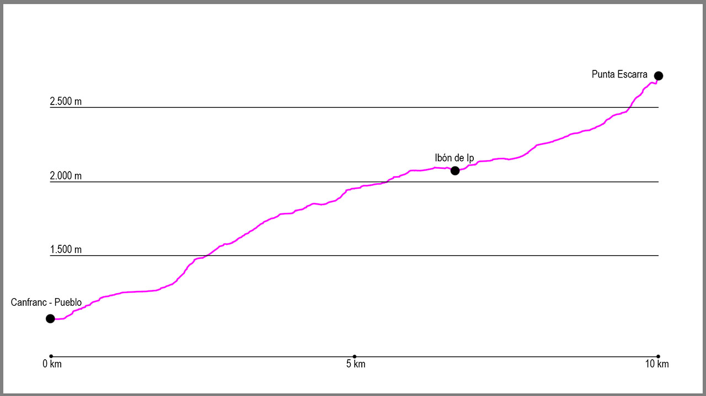

Tomaremos la salida de la ruta en el puente de arriba de Canfranc-Pueblo. Aquí cogeremos la pista que sale del aparcamiento y la seguiremos de manera ascendente. A unos 50 metros de la salida, a nuestra derecha saldrá un camino muy cómodo que tomaremos y que nos llevará poco a poco a ganar altura. Cuando llevemos aproximadamente 1 kilómetro y el camino empieza a meterse en el valle de Ip obviaremos una bifurcación que sale a nuestra derecha para continuar nuestra progresión hacia el ibón de Ip. Este sendero es fácil de seguir y está marcado con marcas de PR e hitos.
Enseguida nos situará cerca de los 2.000 metros de altitud, momento en el cual salimos del bosque y empezamos a movernos por zonas más llanas y con caos de piedras, aunque el firme sigue siendo cómodo.
Justo antes de llegar a unos edificios blancos cruzaremos el río que tendremos a nuestra izquierda y subiremos a coger una antigua pista que nos llevará hasta el refugio y posteriormente la presa de Ip. En la presa, subiremos en dirección norte y sin un claro camino nos situaremos en una zona de hoyas y campas de hierba, para buscar desde aquí Punta Escarra y su collado.
Desde este momento, cogemos dirección noreste y subiremos prácticamente por el barranco que baja del pico hasta que lleguemos al collado de Escarra. Desde aquí el recorrido se complica bastante, teniendo incluso alguna trepada de grado III, por lo que tendremos que extremar la precaución. Subiremos por la cresta en dirección este y tras varios pasos complicados llegaremos a la cima.
